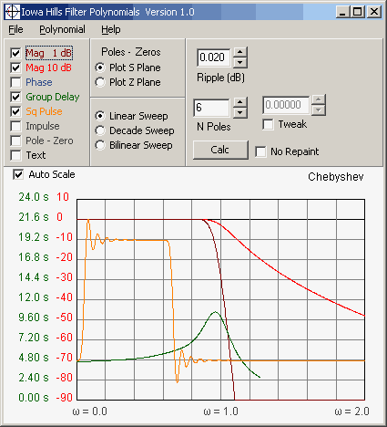
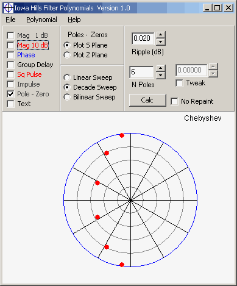
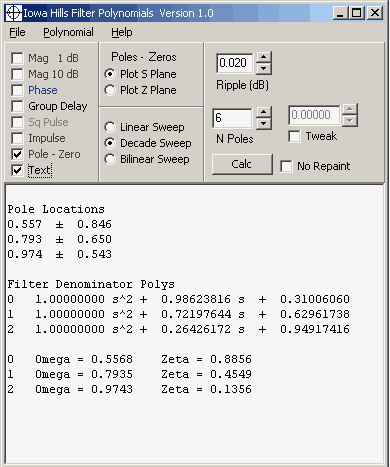
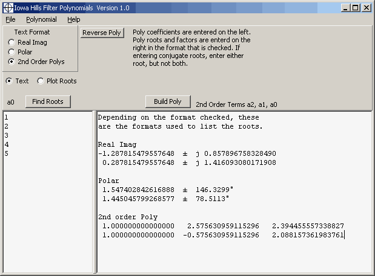

Iowa Hills Software Digital and Analog Filters
Filter Polynomials and Root
Finder
Home
This free utility program has two basic functions. The first is to generate the 2nd order coefficients needed for OpAmp and IIR filter designs. The second is a root finder, capable of finding the roots of up to 100th order polynomials. The program is available on the Download Page.
Filter Polynomials
This program generates the coefficients for the following filter polynomials.
| Butterworth | Chebyshev | Inverse Chebyshev |
| Bessel | Gauss | Elliptic |
| Papoulis (Classic L) | Adjustable Gauss |
These are the same type of normalized filter coefficients found in many texts, except that all of these filters have their 3 dB corner frequency set to Omega = 1. It is common for texts to list coefficients for a Bessel filter, for example, with a 3 dB corner well beyond Omega = 1. Having a uniform corner frequency makes it much easier to compare filters.
The program displays the filter's frequency and time domain responses.

It displays the filter's pole zero locations.

It tabulates the roots in a table.

And it will generate a file of all the 2nd order coefficients from 2 to 20 poles, similar to this.
These 2nd order coefficients are in this order: a2, a1, a0
Chebyshev
Ripple = 0.0200 dB
2 Poles
1 , 1.000000000000000 , 1.319489922081053 , 0.933824586809364
3 Poles
1 , 0.000000000000000 , 1.000000000000000 , 0.809929198186608
2 , 1.000000000000000 , 0.809929198186608 , 0.913367394267526
4 Poles
1 , 1.000000000000000 , 1.271744542109480 , 0.550509608567849
2 , 1.000000000000000 , 0.526773837215708 , 0.921349202219864
5 Poles
1 , 0.000000000000000 , 1.000000000000000 , 0.589143625908720
2 , 1.000000000000000 , 0.953254410975662 , 0.572409710882307
3 , 1.000000000000000 , 0.364110785066942 , 0.936984318484697
6 Poles
1 , 1.000000000000000 , 0.986238161595112 , 0.310060598024238
2 , 1.000000000000000 , 0.721976442650947 , 0.629617379601740
3 , 1.000000000000000 , 0.264261718944166 , 0.949174161179242
7 Poles ........
P51 Root Finder
The program's P51 Root Finder can handle up to
100th order polynomials. The
polynomial coefficients are entered on the left, and the roots displayed on the
right in one of three formats. The roots can also be plotted in polar format.

The program will also build a polynomial from a set of roots. Simply enter the roots on the right side in the preferred format and press the Build Poly button.
The program is available on the Download Page.
Copyright 2013 Iowa Hills Software